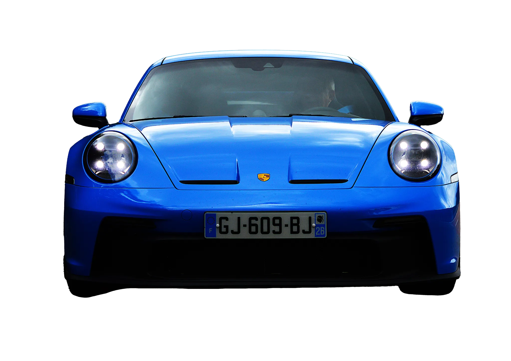
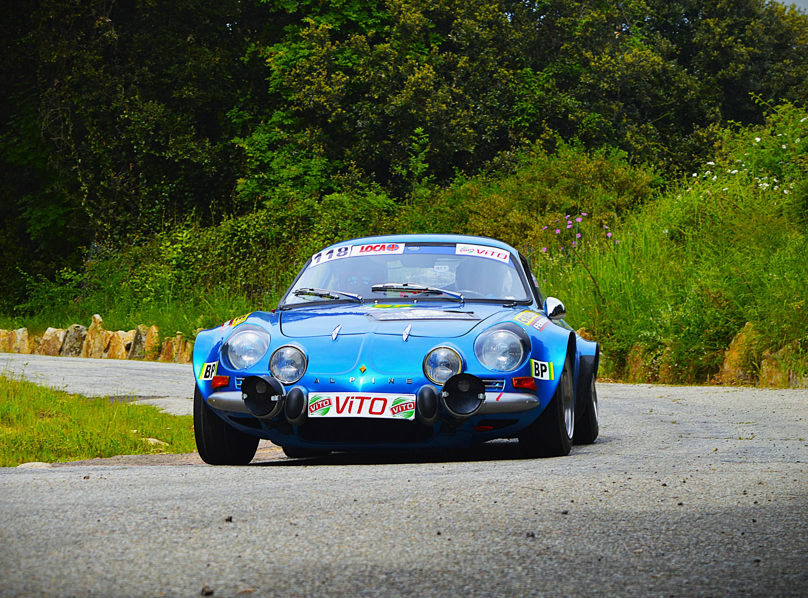
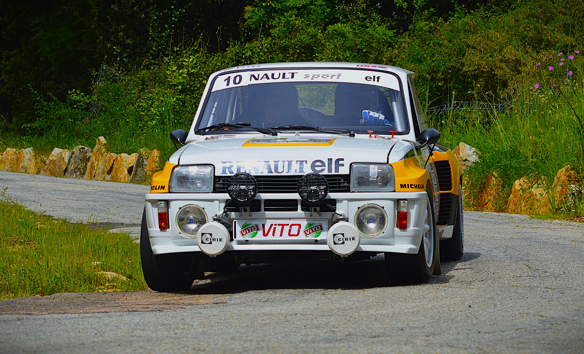

Photographie
Prises de vue soignées : portrait, produit, lifestyle, événement et automobile, avec un rendu propre et cinématographique.
Portfolio visuel • Corse

Photographe & vidéaste automobile
Des images nerveuses, propres et cinématographiques pour mettre en valeur véhicules, marques, événements et projets créatifs.
Sélection
Une galerie courte, lisible et directe : photos, vidéos et contenu automobile, avec ouverture en plein écran sans JavaScript.



Savoir-faire
Une approche complète : préparation, prise de vue, montage, colorimétrie et direction artistique.
Prises de vue soignées : portrait, produit, lifestyle, événement et automobile, avec un rendu propre et cinématographique.
Tournage stabilisé, mouvements dynamiques et narration visuelle pour clips, événements, marques et contenus sociaux.
Rythme, sound design, étalonnage et finitions pour donner une identité premium à chaque vidéo.
Nettoyage, couleurs, peau et optimisation web avec un rendu naturel, professionnel et sans sur-traitement.
Angles bas, détails carrosserie, plans roulants, mouvements fluides et ambiance sonore pour donner du caractère au véhicule.
Concepts visuels, moodboards, choix des lieux, cadrage et cohérence globale pour construire une image qui marque.
Méthode
Brief, références, choix du lieu, ambiance et objectifs de diffusion.
Captation photo/vidéo avec attention aux détails, aux lignes et à la lumière.
Sélection, montage, retouche, colorimétrie et export optimisé.
Profil
Photographe et vidéaste basé en Corse, je crée des images cinématographiques avec une attention particulière portée aux détails, à la lumière et à l’émotion.
Spécialisé dans le contenu automobile, je réalise aussi des shootings et vidéos pour particuliers, marques et événements : portraits, produits, lifestyle et reportages.
De la prise de vue au montage, mon objectif est simple : livrer un rendu propre, percutant et fidèle à votre univers.
Voir les projets sélectionnésContact
Un shooting, une vidéo, un événement ou une idée à développer ? Envoyez-moi quelques détails et je reviens vers vous.